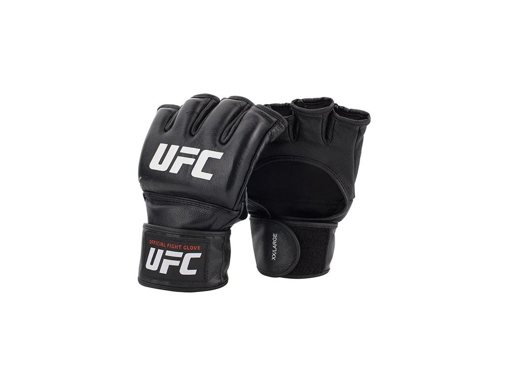
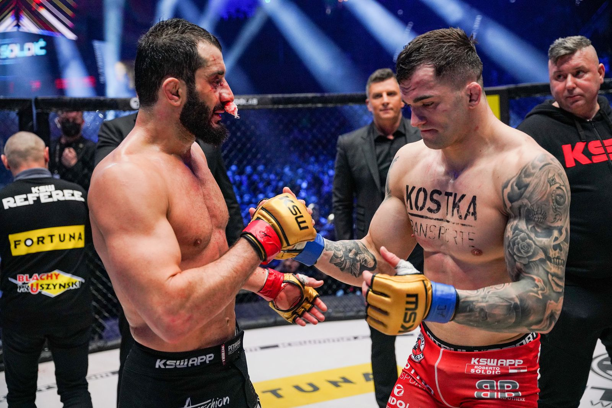
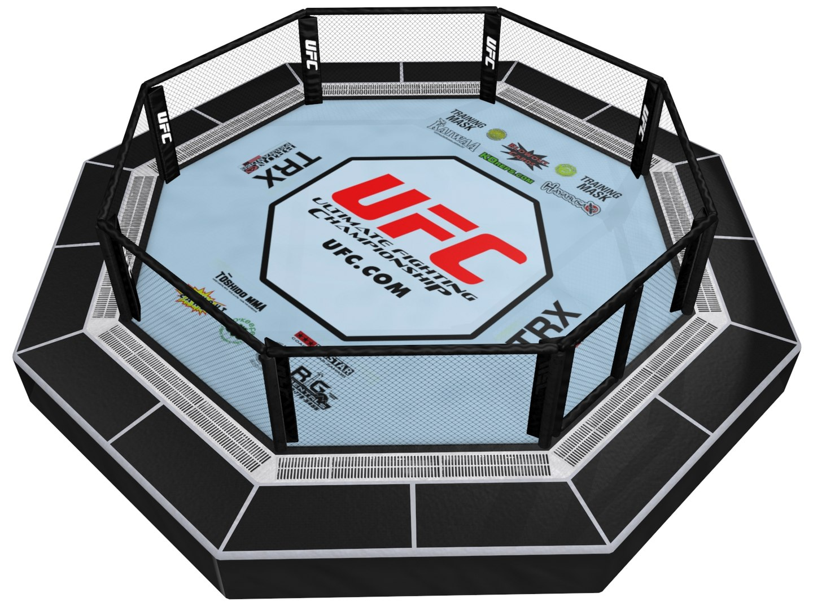

MMA, ili mješovite borilačke vještine, je sport borbe u kojem se koriste elementi raznih borilačkih disciplina, poput boksa, kickboxinga, hrvanja, brazilskog Jiu-Jitsua, Muay Thai-a i drugih. U posljednjih nekoliko godina stekao je ogromnu popularnost i sada se smatra jednim od najbrže rastućih sportova na svijetu. Borbe MMA-a odvijaju se unutar osmerokutne kaveza, poznate kao "Oktagon". Borci nose rukavice s jastučićima i drugu zaštitnu opremu, a mečevi su obično podijeljeni u tri ili pet-minutne runde. Cilj igre je poraziti protivnika nokautom, predajom ili odlukom sudaca. Borci MMA-a su neki od najvještijih i najbolje obučenih sportaša na svijetu. Potroše beskrajne sate treninga u različitim disciplinama i usavršavanju svojih tehnika kako bi mogli natjecati na najvišoj razini. MMA zahtijeva ne samo fizičku snagu i izdržljivost, već i mentalnu čvrstoću i strategiju. Jedna od najpopularnijih organizacija MMA-a je Ultimate Fighting Championship (UFC), koja organizira neke od najvećih i najgledanijih borbi na svijetu. UFC je dao neke od najpoznatijih boraca, poput Conora McGregora, Andersona Silve, Georgea St-Pierrea, Jona Jonesa i Ronde Rousey, da nabrojimo samo neke. MMA je također imao svoj dio kontroverzi, s kritičarima koji tvrde da je sport previše nasilan i opasan. Međutim, organizacije MMA-a poduzele su korake kako bi poboljšale sigurnost i smanjile rizik od ozljeda boraca, poput strožih pravila i propisa te redovitih medicinskih pregleda. Sveukupno, MMA je uzbudljiv i uzbudljiv sport koji je privukao pažnju milijuna navijača diljem svijeta. Pokazuje nevjerojatnu atletsku sposobnost i vještinu boraca i pruža zabavu poput nijednog drugog sporta. Bez obzira jeste li zagriženi navijač ili casual gledatelj, nema sumnje u uzbuđenje gledanja dva vješta sportaša koji se bore u Oktagonu.

MMA rukavice

MMA borci

Oktagon
Rangiranje boraca u MMA (mješovite borilačke vještine) sportu igra važnu ulogu u određivanju tko će se boriti protiv koga i za naslov prvaka u različitim kategorijama. Rangiranje se provodi u svakoj organizaciji MMA-a, poput UFC-a, Bellatora, One Championshipa i drugih. Rangiranje se temelji na uspjesima boraca u prethodnim mečevima, ažurnosti boraca i trenutačnoj formi. Borci koji redovito pobjeđuju jače protivnike i imaju niz pobjeda obično se nalaze u vrhu rangiranja. S druge strane, borci koji redovito gube i imaju loš skor obično su nisko rangirani. Postoji nekoliko kategorija po kojima se borci rangiraju, poput težinske kategorije, godina, države ili regije, kao i specifične vještine koje posjeduju. Najčešće korištena kategorija je težinska kategorija, gdje se borci rangiraju prema svojoj težini, kao što su perolaka, laka, srednja, poluteška i teška kategorija.
Više o borcima i njihovim uspjesima